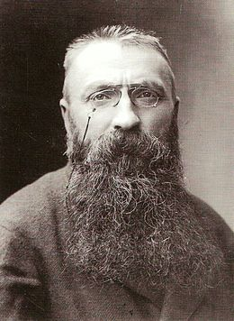
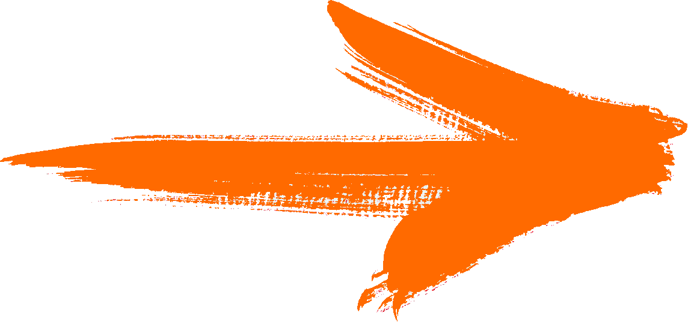
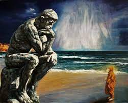
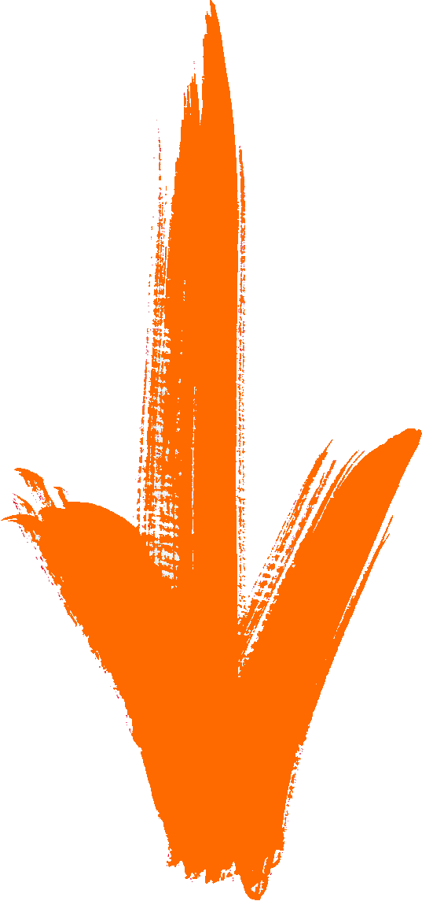
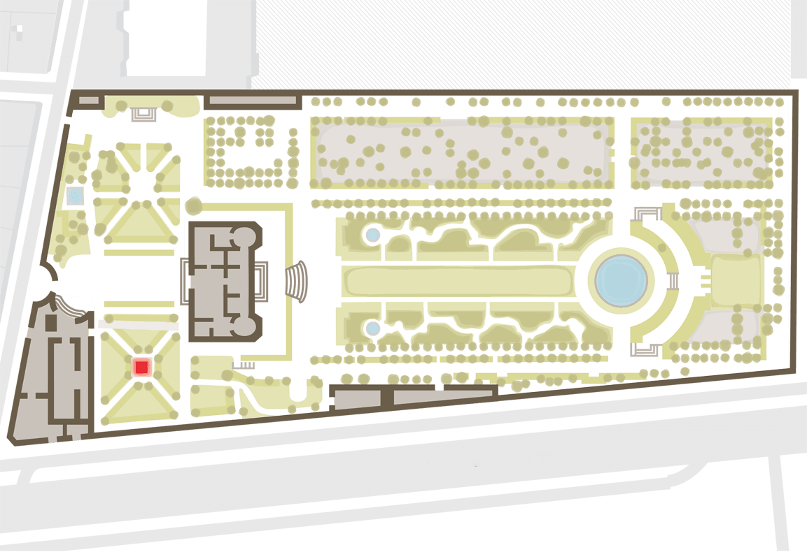
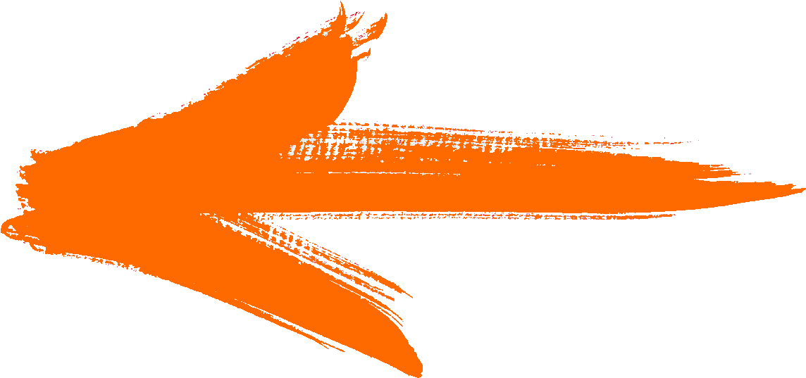
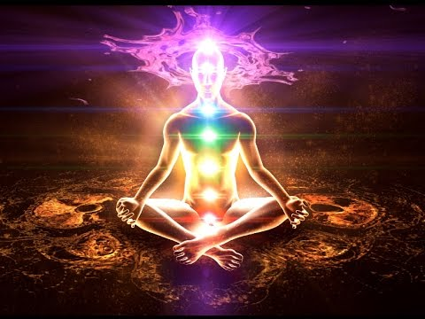
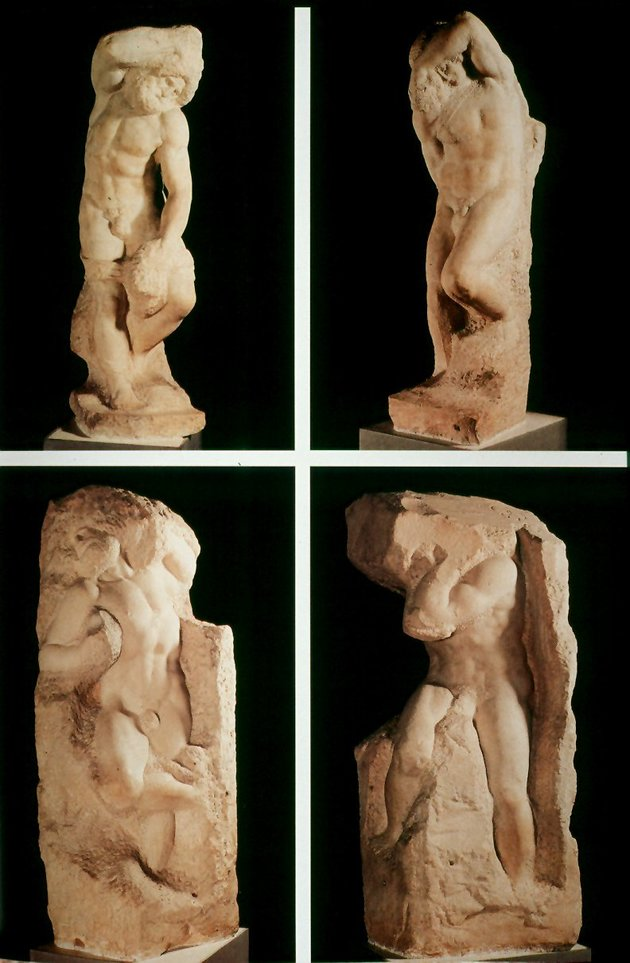
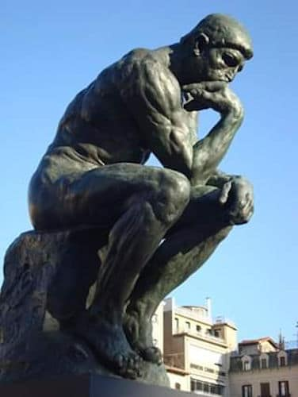

Hombre pensante |
En una ocasión Auguste Rodin expresó:"Yo no soy un soñador, soy un matemático. Mi escultura es buena porque es geométrica. No niego que hay exaltación en mis obras, pero es porque hay en ellas verdad. Esa exaltación no está en mí, sino en la naturaleza en movimiento"  |
| Creado ya en 1880 en su tamaño original, unos 70 cm, para decorar el tímpano de La Porte de l’Enfer [La Puerta del Infierno], Le Penseur [El Pensador]se titulaba entonces Le Poète [El Poeta]: representaba a Dante, el autor de La Divina Comedia que inspiró La Puerta, inclinado hacia delante para observar los círculos del Infierno, meditando sobre su obra.  |  |
|  | Para su pose, esta figura le debe mucho al Ugolin [Ugolino]de Jean-Baptiste Carpeaux (1862, museo de Orsay, París) y al retrato sentado de Lorenzo de Médicis esculpido por Miguel Ángel (1526-153, Capilla de los Médicis, Iglesia de San Lorenzo, Florencia).  |
| El artista invita con su obra a la meditación; el movimiento de la obra es centrípeto es decir, hacia el interior, el hombre representado por Rodin se abstrae por completo del mundo que le rodea para centrarse única y exclusivamente en sí mismo, en su interior. |  |
|  | En general posee de manera explícita ese aspecto de non finito que remite a las obras de Miguel Ángel y que contrasta con el acabado de algunas zonas más trabajadas como por ejemplo las manos. |
| Aparentemente la iconografía es sencilla, un hombre desnudo aparece sentado en una roca sumergido en sus pensamientos y preocupaciones. Las piernas aparecen flexionadas apoyándose en la roca y mientras un brazo descansa sobre una de las rodillas el otro aparece flexionado hincando el codo en el muslo y apoyando el puño sobre su mandíbula. El artista ha sobredimensionado las extremidades del personaje, las manos y pies adquieren un potente desarrollo en comparación con el resto del cuerpo y una cabeza que, quizás, sea demasiado pequeña. |  |